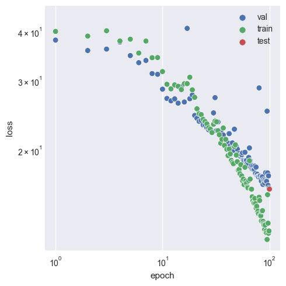

Home
by Joe Webb
Felix ML is a machine learning approach to diffraction patterns. It serves as a proof of concept that the field of microscopy can be greatly aided by the use of machine learning: electron diffraction experiments are expensive, existing computational methods are time-consuming, and machine learning has the benefit of being neither.
Felix ML owes itself to many wonderful existing projects and tools:
- 🔥 PyTorch
- ⚡ Lightning
- 🉠Hydra
- 🚀 Lightning-Hydra-Template
- 📓 mdBook
Introduction
Welcome to Felix ML.
Getting started
Installation
Before you can play around with Felix ML, you'll need to make sure all the package requirements are met, some of which specific versions might be needed.
I recommend using Anaconda to manage an environment for this, and once Anaconda is installed, you have two options:
piporconda. You may prefer to use conda as pip installs packages in a loop, without ensuring dependencies across all packages are fulfilled simultaneously, but conda achieves proper dependency control across all packages; furthermore, conda allows for installing packages without requiring certain compilers or libraries to be available in the system, since it installs precompiled binaries. Regardless, I recommend pip as conda can take an unacceptably long time to resolve.
-
Install Anaconda
-
If you machine has a CUDA-enabled GPU, install CUDA
-
Choose one of the following methods:
Pip
# clone project git clone https://github.com/wephy/felix-ml cd felix-ml # [OPTIONAL] create conda environment conda create -n felix-ml python=3.9 conda activate felix-ml # install pytorch according to instructions # https://pytorch.org/get-started/ # install requirements pip install -r requirements.txtConda
# clone project git clone https://github.com/wephy/felix-ml cd felix-ml # create conda environment and install dependencies conda env create -f environment.yaml -n felix-ml # activate conda environment conda activate felix-ml
Project Structure
├── .github <- Github Actions workflows
│
├── configs <- Hydra configs
│ ├── callbacks <- Callbacks configs
│ ├── data <- Data configs
│ ├── debug <- Debugging configs
│ ├── experiment <- Experiment configs
│ ├── extras <- Extra utilities configs
│ ├── hparams_search <- Hyperparameter search configs
│ ├── hydra <- Hydra configs
│ ├── local <- Local configs
│ ├── logger <- Logger configs
│ ├── model <- Model configs
│ ├── paths <- Project paths configs
│ ├── trainer <- Trainer configs
│ ├── eval.yaml <- Main config for evaluation
│ └── train.yaml <- Main config for training
│
├── data <- Project data
│
├── docs <- Website files
│
├── logs <- Logs generated by hydra and lightning loggers
│
├── notebooks <- Jupyter notebooks
│
├── scripts <- Shell scripts
│
├── src <- Source code
│ ├── data <- Data scripts
│ ├── models <- Model scripts
│ ├── utils <- Utility scripts
│ ├── eval.py <- Run evaluation
│ └── train.py <- Run training
│
├── .gitignore <- List of files ignored by git
├── .pre-commit-config.yaml <- Configuration of pre-commit hooks for code formatting
├── .project-root <- File for inferring the position of root directory
├── environment.yaml <- File for installing conda environment
├── Makefile <- Makefile with commands like `make train`
├── pyproject.toml <- Configuration options for testing and linting
├── README.md <- README file
└── requirements.txt <- File for installing python dependencies
Research
All things research related go here.
Dataset Structure
├── 16 <- ICSD code
│ ├── 16_+0+0+0.npy <- Diffraction iamge as numpy array
│ ├── 16_+0+0+0.png <- Diffraction image as png
│ ├── 16_structure_factors.txt <- Structure factors for computing electron density
│ ├── 16_structure.npy <- Electron density as numpy array
│ ├── 16_structure.png <- Electron density as png
│ ├── 16.cif <- File containing crystal information
│ ├── felix.inp <- File containing Felix settings
│ └── felix.hkl <- File for which Felix angles
│
├── 25
. ├── 25_+0+0+0.npy
. .
. .
MS-SSIM Loss Function
SSIM is a perception-based model that considers image degradation as perceived change in structural information, while also incorporating important perceptual phenomena, including both luminance masking and contrast masking terms. The difference with other techniques such as MSE or PSNR is that these approaches estimate absolute errors. Structural information is the idea that the pixels have strong inter-dependencies especially when they are spatially close. These dependencies carry important information about the structure of the objects.
Tests
The following configurations and models were used.
Configuration
+-- data
| `-- _target_: src.data.FDP_npy_1x128x128.FDPDataModule
| data_dir: D:\felix-ml/data//FDP
| batch_size: 32
| train_val_test_split:
| - 9454
| - 1500
| - 1500
| num_workers: 8
| pin_memory: false
|
+-- model
| `-- _target_: src.models.autoencoder.AELitModule
| config:
| embed_dim: 64
| learning_rate: 0.0001
|
+-- callbacks
| `-- model_checkpoint:
| _target_: lightning.pytorch.callbacks.ModelCheckpoint
| dirpath: D:\felix-ml\logs\train\runs\2023-08-08_20-32-58/checkpoints
| filename: epoch_{epoch:03d}
| monitor: val/loss
| verbose: false
| save_last: false
| save_top_k: -1
| mode: min
| auto_insert_metric_name: false
| save_weights_only: false
| every_n_train_steps: null
| train_time_interval: null
| every_n_epochs: 1
| save_on_train_epoch_end: null
| early_stopping:
| _target_: lightning.pytorch.callbacks.EarlyStopping
| monitor: val/loss
| min_delta: 0.0
| patience: 100
| verbose: false
| mode: min
| strict: true
| check_finite: true
| stopping_threshold: null
| divergence_threshold: null
| check_on_train_epoch_end: null
| model_summary:
| _target_: lightning.pytorch.callbacks.RichModelSummary
| max_depth: -1
| rich_progress_bar:
| _target_: lightning.pytorch.callbacks.RichProgressBar
|
+-- logger
| `-- csv:
| _target_: lightning.pytorch.loggers.csv_logs.CSVLogger
| save_dir: D:\felix-ml\logs\train\runs\2023-08-08_20-32-58
| name: csv/
| prefix: ''
|
+-- trainer
| `-- _target_: lightning.pytorch.trainer.Trainer
| default_root_dir: D:\felix-ml\logs\train\runs\2023-08-08_20-32-58
| min_epochs: 20
| max_epochs: 100
| accelerator: gpu
| devices: 1
| check_val_every_n_epoch: 1
| deterministic: false
|
+-- paths
| `-- root_dir: D:\felix-ml
| data_dir: D:\felix-ml/data/
| log_dir: D:\felix-ml/logs/
| output_dir: D:\felix-ml\logs\train\runs\2023-08-08_20-32-58
| work_dir: D:\felix-ml
|
+-- extras
| `-- ignore_warnings: false
| enforce_tags: true
| print_config: true
|
+-- task_name
| `-- train
+-- tags
| `-- ['dev']
+-- train
| `-- True
+-- test
| `-- True
+-- compile
| `-- False
+-- ckpt_path
| `-- None
`-- seed
`-- None
Model
┌────┬─────────────────┬─────────────────┬────────┠│ │ Name │ Type │ Params │ ├────┼─────────────────┼─────────────────┼────────┤ │ 0 │ model │ Autoencoder │ 3.9 M │ │ 1 │ model.encoder │ Encoder │ 1.4 M │ │ 2 │ model.encoder.0 │ Conv2d │ 3.2 K │ │ 3 │ model.encoder.1 │ GDN │ 16.5 K │ │ 4 │ model.encoder.2 │ Conv2d │ 409 K │ │ 5 │ model.encoder.3 │ GDN │ 16.5 K │ │ 6 │ model.encoder.4 │ Conv2d │ 409 K │ │ 7 │ model.encoder.5 │ GDN │ 16.5 K │ │ 8 │ model.encoder.6 │ Conv2d │ 409 K │ │ 9 │ model.encoder.7 │ GDN │ 16.5 K │ │ 10 │ model.encoder.8 │ Conv2d │ 102 K │ │ 24 │ model.flatten │ Flatten │ 0 │ │ 11 │ model.fc1 │ Linear │ 262 K │ │ 12 │ model.fc_bn1 │ BatchNorm1d │ 1.0 K │ │ 13 │ model.fc2 │ Linear │ 262 K │ │ 14 │ model.fc_bn2 │ BatchNorm1d │ 1.0 K │ │ 15 │ model.fc3 │ Linear │ 32.8 K │ │ 16 │ model.fc_bn3 │ BatchNorm1d │ 128 │ │ 17 │ model.fc4 │ Linear │ 33.3 K │ │ 18 │ model.fc_bn4 │ BatchNorm1d │ 1.0 K │ │ 19 │ model.fc5 │ Linear │ 262 K │ │ 20 │ model.fc_bn5 │ BatchNorm1d │ 1.0 K │ │ 21 │ model.fc6 │ Linear │ 262 K │ │ 22 │ model.fc_bn6 │ BatchNorm1d │ 1.0 K │ │ 23 │ model.relu │ ReLU │ 0 │ │ 24 │ model.unflatten │ Unflatten │ 0 │ │ 25 │ model.decoder │ Decoder │ 1.4 M │ │ 26 │ model.decoder.0 │ ConvTranspose2d │ 102 K │ │ 27 │ model.decoder.1 │ GDN │ 16.5 K │ │ 28 │ model.decoder.2 │ ConvTranspose2d │ 409 K │ │ 29 │ model.decoder.3 │ GDN │ 16.5 K │ │ 30 │ model.decoder.4 │ ConvTranspose2d │ 409 K │ │ 31 │ model.decoder.5 │ GDN │ 16.5 K │ │ 32 │ model.decoder.6 │ ConvTranspose2d │ 409 K │ │ 33 │ model.decoder.7 │ GDN │ 16.5 K │ │ 34 │ model.decoder.8 │ ConvTranspose2d │ 3.2 K │ │ 35 │ model.decoder.9 │ Sigmoid │ 0 │ │ 36 │ loss_function │ MS_SSIM_Loss │ 0 │ │ 37 │ train_loss │ MeanMetric │ 0 │ │ 38 │ val_loss │ MeanMetric │ 0 │ │ 39 │ test_loss │ MeanMetric │ 0 │ └────┴─────────────────┴─────────────────┴────────┘
The MS-SSIM trained model evaluated on 12 random samples at various stages in training.

We see that significant structural progress is still being made at high epochs, signifying that >100 will be required until plateaus are reached. This is made more concrete in the figure below.
Investigating loss over the course of training.

Whilst progress is continually being made on the validation set at high epochs, notice that after epoch 30, we have overfitting occur as the training set sees much greater benefits per epoch. This suggests that the 64 latent dimensions (as seen in the configuration) finally becomes a problem when such an intelligent loss function is used. This is in contrast to what is seen when using BCE and MSE, as they do not encounter the same issues at 64 dimensions.

References
| type | author | title |
|---|---|---|
| article | Snell J, Ridgeway K, Liao R et al. | Learning to Generate Images with Perceptual Similarity Metrics |
| github | Fang Gongfan | https://github.com/VainF/pytorch-msssim |
Contact
Joe Webb
Student. BSc Mathematics and Physics
Disordered Quantum Systems (DisQS)
Department of Physics
Warwick University